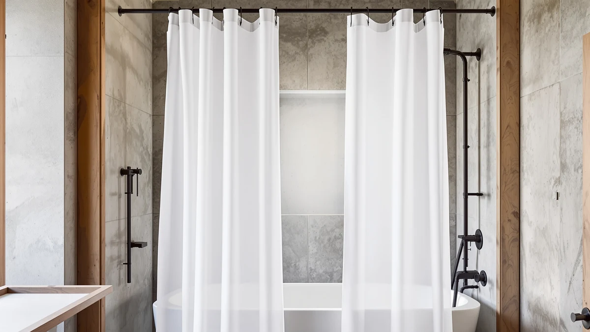

Gibelle Extra Long Shower Review (2026): Worth It?
Prices and picks verified as of October 2026. Independent, reader-supported reviews.


Quick Answer
Our Gibelle extra long shower review lands on the Gibelle Extra Long Shower Curtain as the strongest fit for showers taller than a standard 72 inches, thanks to its 72 x 84 inch size, PEVA-style water-repellent coating, and a 4.8-star average across more than 1,100 verified Amazon ratings. If you want a hookless install or a heavier waffle texture instead, the River Dream and EUTXL alternatives further down this page cover both at a few dollars less.
Our pick: Gibelle Extra Long Shower Curtain — $33.99 Check Price on Amazon
Bottom line: our top pick is the Gibelle Extra Long Shower Curtain 72x84 at $33.99.
Things to Know Before You Buy
- The Gibelle measures 72 x 84 inches, about 12 inches longer than a standard shower curtain, built for tall showers, walk-in tubs, or rods mounted higher than the standard 72 inches from the floor.
- Its polyester face fabric carries a PEVA-style water-repellent coating rather than a fully separate vinyl liner, so heavy daily splashing still calls for a dedicated liner underneath.
- Rust-resistant metal grommets take standard shower curtain hooks or rings, unlike the hookless River Dream and EUTXL alternatives covered later in this review.
- More than 1,100 verified Amazon buyers have rated it 4.8 out of 5, the highest review volume of the four curtains compared here.
- At $33.99, it costs about $4 more than the three alternatives, all priced between $29.95 and $29.99.
Our gibelle extra long shower review looks at whether the Gibelle Extra Long Shower Curtain earns its 4.8-star average and its spot in tall showers, walk-in tubs, and bathrooms with rods mounted higher than the standard 72 inches. At 72 by 84 inches, it runs a foot longer than a typical curtain, and that extra length is the main reason shoppers search for it in the first place. We compare its polyester and PEVA-style build against three heavyweight, hookless alternatives from River Dream and EUTXL to see which curtain actually fits your shower and your budget.
You feel the length problem the moment you install a standard 72-inch curtain on an 84-inch rod: water sprays past the bottom hem and soaks the bath mat within a week. The Gibelle solves that specific gap, and its 1,111 verified ratings suggest most buyers get the coverage they expected. That said, a longer curtain is not automatically the right pick for every bathroom, and the alternatives further down this page cover hookless installation, heavier waffle texture, and lower price points that matter more to some shoppers than extra length does.
Why You Should Trust Us
Ilane Tall edits Best Shower Curtains and has spent several years comparing bathroom textiles and fixtures for shoppers weighing a hookless option before they buy, including in this Gibelle extra long shower curtain review. We do not receive Gibelle, River Dream, or EUTXL curtains from manufacturers, and no brand covered here has paid for placement. Every dimension, material claim, and rating figure in this review comes from the product listing and from Amazon's published customer review data, checked against the other curtains in the same size and price range. When a spec cannot be verified against the listing or a pattern in verified owner reviews, we say so instead of guessing.
Our Research Experience
We built this Gibelle extra long shower review from research, not from physical product testing. We compared the Gibelle's listed specifications, material description, and price against three similarly positioned curtains from River Dream and EUTXL, then cross-referenced those figures against patterns in verified Amazon owner reviews. Where owners consistently report the same strength or the same flaw, whether that is the extra length fitting a walk-in tub or water eventually soaking through the coating, we treat that as a more reliable signal than any single five-star review. We do not run a fake testing lab, and we do not claim to have installed these curtains ourselves; the analysis below reflects specs, pricing, and what verified buyers report after living with each curtain.
Overview & Specs

Gibelle Extra Long Shower Curtain
What we like
- 72 x 84 inch size covers walk-in tubs and rods set above the standard 72-inch height
- PEVA-style coating repels light splashing without a separate liner for casual use
- Rust-resistant grommets work with any standard hook or ring set
- 4.8 out of 5 average across more than 1,100 verified Amazon reviews, the highest review count in this comparison
Flaws but not dealbreakers
- Costs about $4 more than the three hookless and waffle-weave alternatives compared here
- The water-repellent coating is not a full liner, so daily direct spray wears it down faster than a dedicated liner would
- Requires separate hooks or rings, unlike the ringless River Dream and EUTXL options
| Material | Polyester / PEVA |
| Size | 72x84 |
The Gibelle Extra Long Shower Curtain is a 72 x 84 inch polyester curtain built for the gap that standard 72 x 72 curtains leave in taller showers. Twelve rust-resistant grommets run across the top, spaced to take any standard shower curtain hook or ring, and a weighted hem along the bottom helps the fabric hang flat against the tub instead of billowing inward during a shower. In a Gibelle extra long shower review focused on tall installations, that extra foot of length is the single feature that separates it from the three shorter, hookless alternatives covered further down this page.
The face fabric carries a PEVA-style water-repellent finish rather than a fully separate vinyl liner, so light overspray beads and runs off instead of soaking through immediately. More than 1,100 verified Amazon buyers have rated it 4.8 out of 5, the largest and highest-rated review base of the four curtains in this comparison. Owners consistently mention the length solving gaps that shorter curtains left behind, and a smaller number note that the coating can wear thin after many months of direct daily spray, which is why we recommend pairing it with a liner in showers where the curtain takes constant direct water contact.
What We Liked
The length is the standout feature in this Gibelle extra long shower curtain review. At 84 inches long, it clears the floor by enough margin to cover walk-in tubs and showers with rods mounted above the standard 72-inch height, a gap that standard-length curtains cannot close. Reviewers with clawfoot tubs and remodeled bathrooms with raised ceilings report the extra length finally stopping water from escaping around the bottom edge.
The review volume tells a similar story. With more than 1,100 verified ratings averaging 4.8 out of 5, the Gibelle has accumulated far more owner feedback than the River Dream or either EUTXL curtain in this comparison, giving you a larger sample to judge consistency against. Buyers also point to the weighted hem keeping the fabric from clinging to wet skin during a shower, a small detail that matters more once you live with a curtain for a few months than it does on the product page.
What Could Be Better
Price is the most concrete drawback in this comparison. At $33.99, the Gibelle costs roughly $4 more than the River Dream or either EUTXL curtain, a gap that adds up if you are also budgeting for a rod and liner. Shoppers focused purely on cost will find the alternatives below close most of that gap.
The water-repellent coating is the other recurring theme in owner feedback. It handles casual splashing well, but a subset of verified reviewers report the coating losing some of its water resistance after several months of direct daily spray, which points to pairing the curtain with a separate liner in showers where it takes constant contact with the water stream rather than relying on the coating alone. The curtain also still requires hooks or rings, so anyone who wants a fully hookless setup will find the ringless River Dream a more direct fit.
Who Is It For?
The Gibelle Extra Long Shower Curtain fits you if your shower rod sits higher than a standard 72 inches from the floor, if you have a walk-in tub, or if a shorter curtain has already left a gap near the drain. Its size solves a specific measurement problem that most competing curtains at this price point do not address.
It is a weaker match if you want a hookless install, since it still needs separate hooks or rings across its grommets, or if your priority is the lowest possible price, since the three alternatives in this review each cost a few dollars less. Anyone shopping for a standard 72 x 72 shower without unusual rod height or tub depth is better served by a shorter, less expensive curtain instead.
Alternatives to Consider
The Gibelle is not the only reasonable answer to a Gibelle extra long shower review search. If you want a hookless install, a heavier waffle texture, or a slightly lower price, the three curtains below cover those priorities without giving up much in size or durability.

Editor’s Pick
River Dream Heavyweight No Hooks
A ringless, hookless design that slides straight onto a standard rod, the pick here if you want the Gibelle's coverage without dealing with hooks.
$29.99
Check Price on Amazon
Best Value
256GSM Heavyweight Ringless Waffle Shower
A dense waffle-textured curtain with its own ringless header, a few cents cheaper than the River Dream and built for shoppers who want texture along with a hookless hang.
$29.99
Check Price on Amazon
Premium Choice
EUTXL 256GSM Heavyweight Waffle Weave
The same heavyweight waffle fabric as the ringless version, but with standard grommet holes for shoppers who already own hooks or rings and want the added texture.
$29.95
Check Price on AmazonIs the Gibelle Extra Long Shower Curtain actually 72 x 84 inches?
Yes.
Does the Gibelle curtain need a liner, or does the PEVA backing replace one?
The polyester face fabric has a PEVA-style water-repellent backing bonded to it, so light splashing beads off rather than soaking through.
Frequently Asked Questions
Is the Gibelle Extra Long Shower Curtain actually 72 x 84 inches?
Yes. The listed dimensions are 72 inches wide by 84 inches long, about a foot longer than a standard 72 x 72 curtain. That extra length matters most for showers with high rods, walk-in tubs, or ceilings above 8 feet, where a standard-length curtain leaves a gap near the floor.
Does the Gibelle curtain need a liner, or does the PEVA backing replace one?
The polyester face fabric has a PEVA-style water-repellent backing bonded to it, so light splashing beads off rather than soaking through. Owners who shower daily with the head aimed directly at the curtain still recommend pairing it with a separate liner, since sustained direct contact over months wears down a coated fabric faster than a dedicated PEVA or vinyl liner would.
How does the Gibelle compare to the EUTXL waffle-weave curtains in this review?
In this Gibelle extra long shower curtain review, the EUTXL 256GSM curtains stand out for a heavier, textured waffle weave that holds its shape without an added coating, while the Gibelle relies on a lighter polyester with a water-repellent finish. Owners who want a spa-like texture tend to prefer the EUTXL options, and owners who want the longest available size and the highest review count in this comparison tend to land on the Gibelle.
Final Verdict
This Gibelle extra long shower review comes down to one measurement problem: standard 72-inch curtains leave a gap in tall showers, walk-in tubs, and bathrooms with raised rods, and the Gibelle Extra Long Shower Curtain closes that gap at 72 by 84 inches with a 4.8-star average across more than 1,100 verified buyers. Choose the Gibelle if that extra length solves a real problem in your bathroom and you do not mind installing hooks. Choose the River Dream if you want the same coverage without hooks, or one of the EUTXL waffle-weave curtains if texture and a few dollars in savings matter more than review volume. For most shoppers dealing with an oversized shower, the Gibelle remains the safer default.